Group selectors include only accounts currently loaded by the service. Historical
groups of stopped test accounts remain stored but are not production choices.
Other bot selectors also omit explicitly disabled instances. If an account
disappears on refresh, clear the selection, previews and member data rather than
switching silently to another account's similarly named group. This deployment
uses Xiaoman, 43506527; filtering never deletes accounts, settings or audits.
Selecting a group does not activate moderation. A pending group needs verified native bot authority and an eligible native manager, followed by an Activation preview and confirmation before its Rules can operate. Failed or oversized rosters cannot be replaced with partial evidence. The member-directory route has its own bounded 3MiB response allowance; authentication, decompression, identity and complete-pagination validation remain mandatory. Ordinary routes retain 1MiB.
For a temporary management-interface 502, wait and refresh its read-only status. After a save, blacklist command or mute, verify the outcome before submitting again: a gateway error does not prove that the original operation was never submitted. These operations are not automatically retried. Distinguish rejected platform-directory responses from proxy connection failures during restarts; an online bot alone does not establish that the management page works.
All Wangshangliao direct-message features are retired. DM-only business code, old menus, dedicated support and friend modules have been physically deleted: private group selection, automatic friend approval/welcomes, personal knowledge, private AI, private administrator guidance, private finance and image intake are not offered. Group images/text, group AI, activities and existing ledgers remain. Retain historical conversations, knowledge, invitations, ledgers, payment records and audits without publishing them into groups or clearing them as part of code removal. The record "Loaded by a controlled full restart at 01:48 Asia/Shanghai, November 2, 2026" describes an earlier version only. It does not establish deployment of this removal or command update, historical-data cleanup, or mobile acceptance; the current changes remain pending full live acceptance.
| Retired entrance | Replacement or disposition |
|---|---|
| Private/numeric menus, group selection and private administrator commands | Use retained commands in the target group; existing authorized Dashboard operators can read WebUI help; no cross-group chat selector |
| Group help/identity commands and aliases | Chat entrances removed: 帮助, 群管帮助, help / /help, 我的权限, sid / /sid, including former prefixed forms; WebUI help remains |
| Blacklist-duration chat settings | Chat preview/confirmation removed; existing authorized Dashboard operators use Groups → Rules → Blacklist Settings; saved group durations are unchanged |
| Private blacklist/whitelist commands | Verified native group mentions/replies, or Groups → Rules for an already authorized Dashboard operator |
Private 广告图片 and attachments |
Groups → Rules → Keyword Replies & Scheduled Messages; one image per keyword rule, up to three per schedule, one rotated per occurrence |
| Automatic friend approval/welcomes; Groups → Friend Requests | Removed, without an automatic friend replacement |
Personal knowledge, dedicated support, /chat, private administrator guidance; AI → Customer Service / Admin Guidance |
Removed, not migrated to group AI; group AI uses only its server-maintained account/group profile |
| Private settlement/payment confirmation; Activities & Finance → Settlement Grants | Removed private-finance grants and chat; retain Activities & Finance → Invitation Settlement for existing authorized Dashboard operators |
Ordinary group administrators do not acquire global AstrBot Dashboard access. Do not share the global password. Old chat finance roles are not Dashboard accounts. Ask the existing operator to maintain images or finance when you lack the relevant access. Group invitation/activity queries and lotteries remain; private cash balances and payee details must not be moved into public groups.
Every group member can query 排名 / 排行, without a management role.
今日排名, 今日排行, 排行榜, 发言排行, 发言排行榜 and existing slash forms remain compatible.
Replies show only today's top 20 effective speakers in Beijing time, without pagination.
Legacy 排名 2 / 排行 2 also return the same top 20.
Each line uses 1:昵称（有效发言N条）: nickname and valid-message count only,
never internal UIDs or transport IDs. Names come from trusted member records,
not identity guesses based on nicknames. Genuine numeric nicknames remain valid;
an unavailable name is shown as 未获取昵称.
Commands and their replies retain the existing automatic-recall behavior.
Internal UID-based statistics, ordering and automatic whitelist qualification are unchanged.
New source entrance: Wangshangliao Moderation → Groups → Rules → Select Group → 入群欢迎. Off by default. Enter up to300 characters, enable, then Preview Changes and Confirm Save. Native mentions are prepended automatically; do not type a nickname or UID as identity. This independent setting does not reschedule advertisements or change lists, sanctions or finance.
Only fresh native admissions corroborated with the latest membership event and complete roster qualify. Applications, user text, old notifications and duplicate joins do not. A two-second window coalesces simultaneous admissions into one message, including three or more arrivals (one or two arrivals in that window are also combined). At most20 members are mentioned, subject to the native message-size limit; larger batches include a total rather than being split into a burst. Bots and blacklisted members are excluded.
Accepted welcomes get a durable20-second self-recall timer, not per-second edits or messages. After a second welcome is accepted, the previous welcome becomes due for recall. A failed or uncertain second send never prematurely supersedes the previous message. Only this bot's welcome receipts qualify; ordinary member messages and ads are untouched. Unknown sends/recalls are not automatically retried. Disconnections and queue timing mean the phone is not guaranteed to remove the message at precisely the twentieth second. Pause, disabling or authority changes fence new submissions; old admissions are not replayed.
A controlled full restart is required for the adapter changes; a plugin-only reload is insufficient. See maintenance for source and isolated-test evidence. No production group was enabled, and real native-join/mobile acceptance remains pending.
Source update, November 3, 2026: Wangshangliao Moderation → Groups → Video Relay. Telegram sources, history/concurrency drafts and the unavailable Start button are removed. This feature no longer collects Telegram videos. The independent activity collector and its accounts, sessions, statistics and watches are not deleted or migrated. Legacy relay drafts discard retired fields on read and never enable automatic sending.
Supported sources use ac=list, ac=detail&ids=... and direct HTTPS MP4 entries.
TMZYZ bkplayer IDs additionally use the fixed player and explicit-range fMP4 adapter.
November 14, 2026: automatic scans read at most five list pages and try twenty
candidates per cycle. Exhausted, fenced or cooled-down first-page items no longer
prevent later pages from being scanned. Page and offset persist across reloads,
scoped to bot, destination, source, configuration version and category. The scan
wraps after the last page and resets to page one if the catalog shrinks. Exact-ID
previews and temporary category/size overrides do not advance automatic progress.
Progress contains only identifiers, numbers and timestamps, not additional titles,
media or signed URLs. Responses that ignore the requested page fail explicitly;
publication fences and media, permission, size and duration limits remain intact.
Relay by Category loads the CMS category catalog; clicking one category previews a
single video from that category. The choice applies only to that preview and does
not overwrite the saved automatic-sending category. Upload and delivery still need
explicit confirmation.
To use a TMZYZ member-console private parse gateway, place its player ID and TOKEN in
the instance-private tmzyz_gateway.json (mode 600, readable only by the service
account; optional carrier and public client_ip). Do not paste secrets into the
dashboard. The private gateway is preferred and the public player remains a fallback;
both accept only reviewed TMZYZ HTTPS media edges. General HLS, encrypted/DRM
streams, arbitrary third-party gateways and redirects remain unsupported. Remote
scripts are never executed and CMS credentials are not accepted. H.264/AAC MP4
must be 1..1200 seconds, at most 2048px, with local
FFmpeg/ffprobe installed. The local tools remux and extract a JPEG; no manual cover
review or source-cover download is required. Removing keyword filters does not
constitute a content review.
Saved, enabled group rules, verified native admin permissions and a proactive grant
remain required. This is limited to existing JWT Dashboard bot-management principals.
The private instance video-relay-control.sqlite3 stores configuration, schedules
and records, separate from moderation, activities, campaigns, member lists and finance.
Original/thumbnail digests must match native readbacks before message publication.
Long uploads do not hold the moderation HTTP lock.
Local video and cover files are deleted immediately after completion, failure, unknown outcome or cancellation. Previews last at most five minutes. Background maintenance recovers expired/interrupted work and retries failed cleanup; the UI shows Cleanup Pending instead of falsely claiming deletion. Persistent bot + destination group + CMS endpoint + source ID keys and video digests prevent duplicates even after restart or local cleanup. The same digest under another ID is blocked in the same group. Legacy accepted/unknown records are migrated. Unknown or rejected outcomes pause the schedule for review and are never automatically retried. Saving again does not bypass publication keys. No new item means waiting until the next interval; only failures before submission may be attempted later. Completed job details are pruned after seven days or beyond the latest 2048 records, in batches; publication keys remain. Video bytes, signed download URLs and chat text are not stored in the audit.
The UI separates delivery and cleanup states. Provider acceptance does not establish
independent receipt or mobile playback. Hot-loaded November 3, 2026: one fixed,
neutral five-second video was accepted for test group1459282, with local files
deleted and persistent dedup retained. Automatic delivery remains disabled.
Real CMS ingestion, independent receipt and phone cover/playback are not yet accepted.
The user reported empty messages for both V1 and the Timestamp-corrected V2:
both phone checks failed. A read-only comparison with the user's native 12-second
video identified noncompact JSON incompatible with the official legacy decoder's
exact wrapper prefix. Video output now uses the same compact wrapper as existing
image/text delivery. On November 3, 2026, the user confirmed the V3 video was working
normally on their phone. This accepts only that neutral test video, not real CMS
ingestion, independent receipt or continuous scheduling. Old receipts and dedup
remain, and automatic CMS delivery stays off.
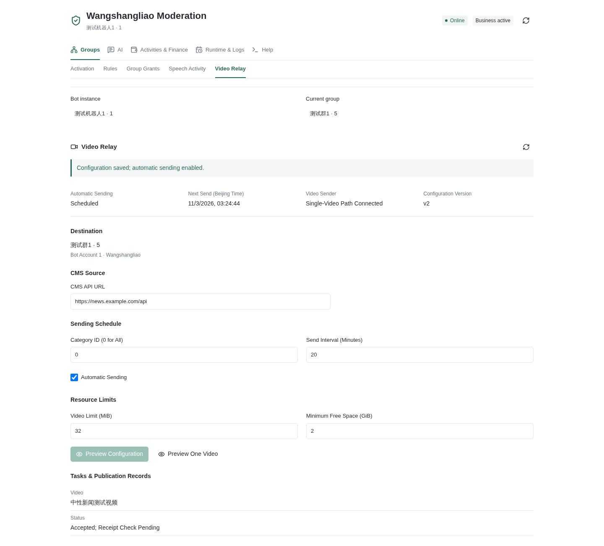
Selected speech-report members require a separate server-owned grant for the
specific receiving bot and group. A report, speech exemption or manager role alone
grants nothing. Use a real client mention: @MEMBER 禁言128 or
@MEMBER 禁言 128 mutes that member for128 minutes, without mentioning the bot.
Specify1..4320 whole minutes, at most three days: @MEMBER 禁言4320.
Longer durations are rejected, not clamped. Ordinary automatic mute limits remain unchanged.
The minute suffixes 分 and 分钟 and a trailing full stop are accepted.
@MEMBER 禁言 returns a request for the missing duration, without muting or invoking AI.
Typed names/UIDs, multiple mentions, reply-only targets,
conflicting replies and extra instructions are rejected.
Self, owners, administrators, bots, valid exemptions and blacklisted targets are
protected; existing mutes are never overwritten.
From November 5, 2026, an accepted or verified delegated mute also queues recall
of this target's authenticated messages in the same group during the 30 minutes
before the original command. Text, images, stickers and videos need not be
individually classified as violations. Mute first; recall runs in the background,
newest first, without OCR or AI. Each bot runs one batch, paced three to five
seconds apart, with a maximum of500 messages. Busy or oversized selections are
reported as not started; the accepted mute is unaffected.
Already accepted or independently observed recalls are skipped. Rejection,
unknown results, revocation, promotion or a new valid exemption stop further work.
The existing Dashboard bulk-recall panel shows progress and allows cancellation;
this does not grant delegates Dashboard access or a general recall command.
Interrupted jobs never resume automatically. Missing or pruned original routing
evidence cannot be recovered, and provider acceptance is not phone verification.
Delegates cannot kick, unmute, change lists/rules, access finance or log into the
Dashboard. Current grants, group lifecycle and complete native identity evidence
are rechecked before submission. Acceptance, rejection and unknown results remain
distinct; unknown outcomes are never automatically retried or treated as phone acceptance.
Private mute_delegates.json explicitly records account/group/UID grants and is
intersected with the current speech_report.json; missing/invalid files deny access,
and adding a report member does not automatically delegate muting.
Short aliases added November 2, 2026: 加黑 = 黑名单, 删黑 =
解除黑名单, 加白 = 白名单, and 删白 = 移除白名单.
Original commands, authority, target checks, durations and confirmations remain.
Use a real mention for 加白; 加黑 / 删黑 also accept a verified same-group reply.
@MEMBER 删白 can locate the exact saved entry using one real client mention.
删白 NAME remains available. Both return search results and still require
选择白名单 RESULT_NUMBER followed by a separate personal
确认白名单 PREVIEW_TOKEN; neither immediately removes an entry or unmutes.
Bare 删白 explains the missing target. Invalid mentions or authority produce
an explicit explanation instead of guessing a nickname.
An authorized native group owner/administrator adds a speech exemption by a
real client mention of one member plus 白名单. Addition is immediate, without
search/select/confirmation. View with 白名单. Removal uses
移除白名单 CURRENT_NAME/SAVED_OLD_NAME/EXACT_UID, 选择白名单 RESULT_NUMBER,
then personal 确认白名单 PREVIEW_TOKEN. Dashboard addition still searches the
current complete roster by real name, never blind UID input.
A verified native reply to one same-group original message, or a real mention
of one member plus 黑名单, records the entry and immediately mutes for the
configured group duration, without kicking. Each trusted real rejoin also
mutes; duplicate notices, ordinary messages and restarts never renew it.
Group 解除黑名单 (alias 移除黑名单) removes and unmutes with separate outcomes.
Dashboard addition only records; Dashboard removal only removes. An explicit
解禁 @MEMBER / 解除禁言 @MEMBER command or confirmed dashboard unmute also ends
the current group blacklist cycle after native verification, retaining audit.
An explicit command may remove the entry after verifying the target is already
unmuted, without submitting another native unmute. Unknown or unverified receipts
retain the entry; concurrent re-enrollment invalidates an old preview/removal.
Phone-side unmute has no trusted administrator-event synchronization yet.
Natural expiry, list absence and page reads never remove entries automatically.
This linkage was loaded on November 2, 2026 Asia/Shanghai. Real unmute linkage and
phone-side acceptance remain incomplete.
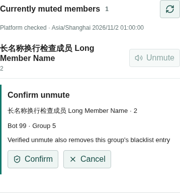
黑名单禁言时长 N分钟/N小时/N天 and its duration-setting chat preview/confirmation
flow are removed. Existing authorized Dashboard operators use
Groups → Rules → Blacklist Settings, with preview and confirmation.
Removing the chat entrance does not change saved group durations.
The unset default remains 41,760 minutes (29 days), with a Dashboard range of
1..41760 whole minutes. A later explicit setting change affects future group
additions and real rejoins, not existing mutes. Ordinary automatic mutes retain
their 24-hour cap.
New list entries are exclusive by bot/group/UID: explicitly remove the other entry first, never silently transfer it. Preserve historical overlaps with blacklist priority and separate removals. Names, UIDs, typed mentions, copied quotes and multiple targets are not native identity evidence. Owners, admins and bots remain protected. Dated “no immediate punishment” records do not describe the current group blacklist command.
Blacklist target errors distinguish an absent roster entry, inconsistent identity binding, an unverifiable original message, and conflicting mention/reply targets. An absent entry may mean departure or delayed member synchronization; it does not prove departure or mean that a real mention was typed incorrectly. These target validation failures never change lists or submit mute/unmute actions. Verify whether the member is still in the group first. This November 1, 2026 feedback fix was loaded on November 2, 2026 Asia/Shanghai; it does not enable enrollment of departed members or retroactive sanctions.
These bilingual isolated browser checks are not deployed-page, live-group or phone acceptance:
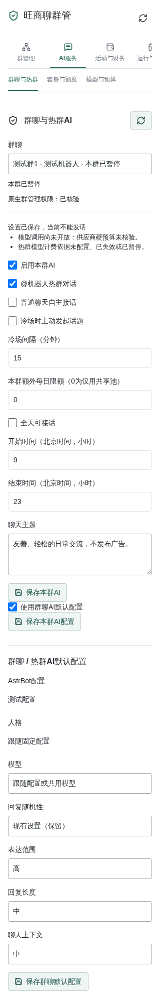

Once an existing violation qualifies for a mute, verify authority and submit the mute before recalls; send any required warning notice last. The first three recall-only warnings, durations and protected identities do not change. Slow recalls no longer hold up progressive content mutes. Keep separate receipts and never automatically retry unknown mutes. This fix is loaded, but no real-member test sanctions or matched live latency comparison were performed for this release.
Existing Dashboard operators can open Group Management → Rules → Raid defense, choose the exact bot and group, and personally preview and confirm the saved switch. It defaults off. The existing flood-control entry, thresholds and warning cycle do not change; this is a separate newcomer protection switch, not a required chat command.
A corroborated real admission starts a ten-minute observation. Three messages of any kind in three seconds, or five images/stickers/videos in ten seconds, submit a ten-minute mute before independently recalling the batch, without changing ordinary warnings or waiting for OCR. Two different observed UIDs triggering within sixty seconds start fifteen minutes of protection. Only subsequent newcomers receive a one-minute admission mute. The period does not extend itself or punish previously normal members.
Owners, administrators, bots and valid manual/automatic whitelist members remain protected. Existing blacklists take priority. There are no kicks, automatic blacklists, group-wide mutes or nickname-based account identity guesses. Rejoining restores only the remaining accepted mute, rounded up to whole minutes, never another full ten minutes. A successful unmute through the bot cancels that defense-owned remainder, not a blacklist. Direct phone-side unmute event handling remains unverified; do not assume it cancels remaining restoration work.
Full live acceptance with two ordinary targets is still pending: test account
31846829 currently owns group 1459282 and must remain protected. The six production
groups have not been enabled. The following isolated browser fixtures are not phone
or live-sanction evidence.
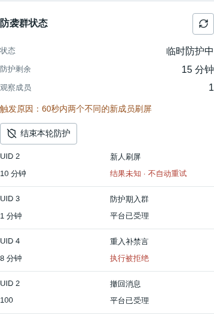
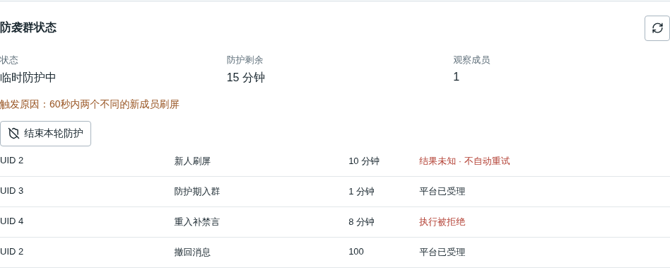
Open Activities & Finance → Player Lottery, save the settings, then click Start draw, or Schedule draw when a future Beijing start time is set. No administrator chat message is required. Saving alone remains a draft. The current round must show Open or Scheduled to confirm creation. Cancel draw is also available on the panel; cancelling an unpublished task does not post a group notice. Native administrator commands remain compatible, but are no longer a required step.
New WebUI drafts use 参与抽奖 as the entry phrase. Members send this exact
phrase in the activity group without mentioning the bot. Existing custom phrases
and active rounds are preserved; follow the current notice. Each member enters
only once and scheduled rounds accept entries only after publication.
Successful entries repeat the frozen round's public notice, then append the
participant count and nickname with a success message. No member UID, transport
identity, account number or automatic mention is attached. Missing trusted names
produce a name-free success line, never an identity fallback. Duplicate entries
do not increase the count. Existing command auto-recall is retained; no payment
is made by this acknowledgement.
Whole yuan only (minimum CNY 1) generates allocations in yuan units, not rounded decimals. The pool, fixed tiers and optional extra bonus must all be whole yuan. Choose countdown or Publish when full. The latter has no deadline: the result is published only after the required valid participants enroll. Member departures that invalidate a full group block the draw for review without rerandomizing. An1111 CNY lucky pool with11 packets and188 CNY extra gives exactly 1111 CNY in integer packets and adds188 CNY to the highest recipient, budget1299 CNY. Both new switches default off; existing frozen rounds and results remain unchanged.
Panel control requires a logged-in Dashboard principal and current bot, group and responsible native manager authority. The real Dashboard actor is audited without fabricating a chat event. Duplicate clicks are deduplicated. Refresh after network errors; unknown outcomes never automatically replay, cancel or bypass an unresolved round. Opening notices keep essential activity, amount, timing, phrase and contact details. No automatic payments are made.
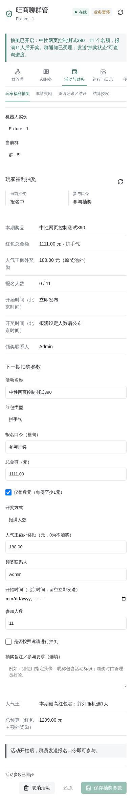

In Activities & Finance → Player Lottery, choose Lucky split and enter the packet pool, participant count, and Luckiest winner bonus (CNY, 0 = off). The bonus is a separate addition outside the packet pool. A3,000 CNY pool plus a288 CNY bonus requires a3,288 CNY budget. Equal split, fixed tiers and legacy prize draws do not support this extra award.
The winner is the one valid entrant receiving the highest actually allocated random packet, not the most active speaker, inviter, or an administrator's chosen member. Ties are resolved by randomly choosing one of the tied highest recipients; the opening notice discloses this rule. No valid entries means no bonus. Unclaimed packets do not compete for the award. The amount freezes with the packet plan when opening or reserving the draw, and results follow the selected countdown or full-capacity condition.
Results retain descending base-packet order and separately show the recipient's packet, bonus, and combined amount, plus the round's total payable. Unclaimed pool money and unspent bonus remain separate; unknown result receipts never redraw or choose again. Zero disables the award; older clients omitting the field preserve the saved value. Existing draws and historical results are not changed. Saving remains a draft until Start draw / Schedule draw is clicked. These are pending allocations, not automatic payments.
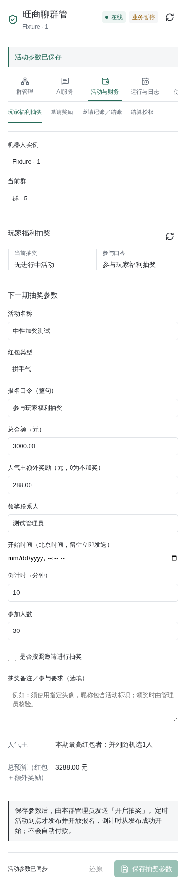
In Activities & Finance → Player Lottery, set Start time (Beijing, blank = immediate) using a full calendar date and time up to thirty days ahead. The value always means Asia/Shanghai, regardless of browser, phone or server timezone. The countdown remains the enrollment duration after accepted publication. For example, a20:00 Beijing start with a ten-minute countdown opens entries around20:00 and publishes the result approximately ten minutes after accepted opening, never early.
Saving settings is only a draft. Click Schedule draw on the panel.
Native administrator start commands remain compatible but are not required.
Only the scheduled confirmation creates a durable task. No opening notice or entries
are accepted before publication. The phrase, settings and packet shares freeze when
the reservation is created; publication does not rerandomize or adopt later drafts.
The current-draw panel and 抽奖状态 show the schedule.
Use 取消抽奖 before changing or replacing it; cancelling an unpublished task posts no
extra group notice. Exact commands also support 抽奖开始时间 YYYY-MM-DD HH:mm and
抽奖开始时间 立即. Legacy clients omitting this field preserve its saved value;
existing immediate draws remain immediate.
Tasks survive restart and recheck the group, bot, creator's native management role, and proactive-send grants when due. Revocation, unverifiable membership, or lateness over sixty seconds blocks the task, without catch-up sends. Check the cause, cancel and explicitly reschedule. Unknown opening receipts never replay or open entries; unknown results never redraw. Only one scheduled or active draw may exist per group. This schedules lottery notices, not automatic payments.

Open Groups → Rules → Speech Whitelist → Whitelist History. Choose all whitelisted members or one member, then Today, Yesterday, or both retained dates. An optional literal content filter narrows the displayed conversations. Load up to the latest100 effective text messages per member, numbered oldest to newest. The copy icon exports names, UIDs, effective text totals and numbered message bodies together. Selecting everyone combines the entire whitelist; selecting one exports only that member. Nothing is posted to a group or changes list membership.
Recalled/violating messages, bots and commands are excluded; the newest30 seconds await verification. A content filter does not change the date range's text total. Only Beijing today and yesterday are readable: bodies are projected transiently from the same group's native ledger, not copied into a new archive. Missing originals, incomplete collection and clipboard failures are explicit, never filled with invented text. Scope/filter changes and cancellation discard delayed results. Larger lists load in bounded batches without blocking message handling.
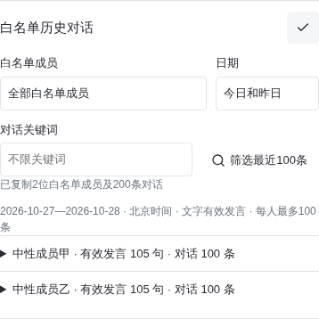
Group Management → Rules now has separate, default-off controls for recalling native merged-chat cards, QR-code images, and images containing digits. Save each bot/group independently. Matches recall only the original message, without warnings or mute escalation; valid whitelists, owners, administrators and bots remain protected. Digit detection also includes clocks, dates and prices in ordinary screenshots. Only new messages are inspected. Basic recognition can miss difficult images; failures and timeouts never constitute violations. Merged cards are identified by the native format, not by guessing quoted text; their nested conversation is not claimed to be fully decoded. OpenCV and Tesseract run locally in bounded workers, not through an AI or public OCR service. Recognized text is not retained. Existing flood limits remain independent: five messages in three seconds or fifteen in ten seconds can still trigger burst handling.

Open Wangshangliao Management → Groups → Speech Activity, select the bot and
group, then choose today or yesterday. Beijing midnight starts a new daily count;
only the previous and current dates are retained, not a long-term activity history.
Group totals include active members, message types, hourly distribution and top 30.
Search a member name or UID and select the matching member for separate daily
statistics. Recalled/violating messages, bots and commands do not count; the newest
30 seconds await verification. Automatic whitelist eligibility is unchanged.
The copy icon beside the ranking copies the selected date's top 30 with group
name/ID, date, rank, member name/UID and message count. Empty or incomplete rankings
cannot be copied. A browser denial displays an error, never a false success.
This is access-controlled Dashboard reporting/export, not a group 排名 / 排行
reply: public group replies show only the top 20 names and valid-message counts,
without UIDs.
Bots with a configured Focused Speech Report also show exact-UID member totals by configured group, per-member combined totals and the combined team total. The Today/Yesterday selection applies to this report; its copy icon includes the complete group breakdown. Only effective text counts as chat sentences: images, videos, forwards, recalled/violating messages, bots and commands are excluded. The newest 30 seconds await verification, and only today/yesterday are retained. Incomplete reports cannot be copied. A disabled configured group blocks the whole report rather than silently shrinking its scope. Reports do not post into groups or change whitelist/moderation settings.
Hourly Detail (November 6, 2026): switch the focused report between daily summary and hourly detail, for all configured groups or one group. The detail has 24 Beijing slots, from00:00–01:00 through23:00–24:00, with each exact-UID member, slot totals and day totals. Both views use the same effective-text records; later recalls update the original hour and daily total. No new message bodies or long-term hourly archive are stored. Copy Table exports tab-separated cells; Download now saves a PNG image, replacing SVG so phones can open it directly. Exports include date, selected scope, UIDs and last verification time. They are generated on demand in the browser and downloaded only to the user's device: no server-side report files, uploads, cache or group posts. Temporary image memory and object URLs are released. Each image is limited to4million pixels and2MiB; copy the table if image export fails or exceeds a limit. The management sandbox does not grant image-clipboard permissions. Incomplete or failed reads cannot be exported; changing date, group or view cancels the previous image.
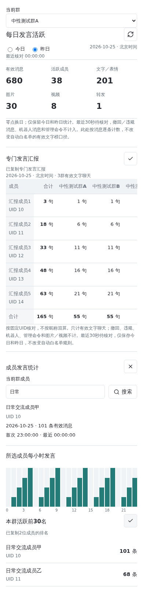

Under Groups → Rules → Keyword Replies & Scheduled Messages, enable 新广告发送成功后撤回上一组广告, then preview and confirm. It defaults off and is isolated by robot and group. All schedules in that group share one previous batch: B replaces A and C replaces B, not only the previous occurrence of the same schedule. The old image and every split text segment are recalled; keyword replies, ordinary chat and other groups are never included.
The new image still precedes its text. Only successful receipts for the entire new batch permit recalling the old batch. Failed, partial or unknown new sends leave the old advertisement intact. Recall results appear separately and never change the new send's outcome. Unknown recalls are not retried or replayed on restart. Multi-message recalls are spaced three seconds apart. The first new batch after enabling only establishes a reference; older historical ads are not retroactively recalled. Disabling clears the previous-batch reference. Platform acceptance is not phone-display confirmation, and platform time limits can still prevent recall. Deployment requires a controlled full restart because the native adapter now retains the accepted routes.
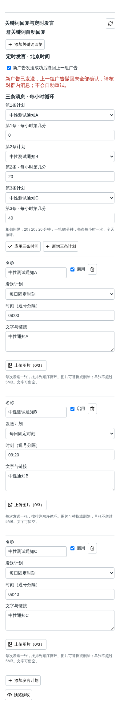
Current flood thresholds are five messages in three seconds, fifteen in ten
seconds, or five identical texts in thirty seconds. Each penalty cycle gives
three recall warnings, then one-, three- and ten-minute mutes. Warning grace
restarts only after the final ten-minute mute expires; unknown receipts do not
reset the cycle or trigger retries. A continuous burst counts as one violation.
Group 排名, 排行 and their aliases show only today's top 20 effective speakers,
without pagination or UIDs. Internal statistics and automatic whitelist rules remain UID-based.
Automatic speech-whitelist grants now require both a top20 position in yesterday's
Beijing-day ranking and more than100 eligible texts (at least101) yesterday.
Today's messages do not grant new eligibility, and excluded positions are not
filled from rank21 onward. Existing automatic eligibility survives day changes:
each eligible text refreshes a seven-day inactivity period. Seven consecutive
days without eligible text remove the automatic grant. Members need not qualify
again every day, so retained members plus new qualifiers can exceed twenty.
Grants refresh every30seconds. Only qualification and daily activity timestamps
are retained for seven days; chat bodies and daily statistics still retain only
today and yesterday. Recalled or uncertain-recall
messages do not count; the most recent30seconds are not yet eligible for grants.
Existing limits of one counted text per member per30seconds and identical-text
deduplication over five minutes remain. Media-only messages and commands are not
counted. Manual grants remain intact; blacklist entries take priority. An explicit
removal prevents readdition from historical eligibility; a later day's fresh
qualification is required. Source changes and offline tests are not deployment
evidence.
See the maintenance record for dated
deployment evidence and offline coverage. No new real-user penalty-cycle trial
or official-phone acceptance is claimed.
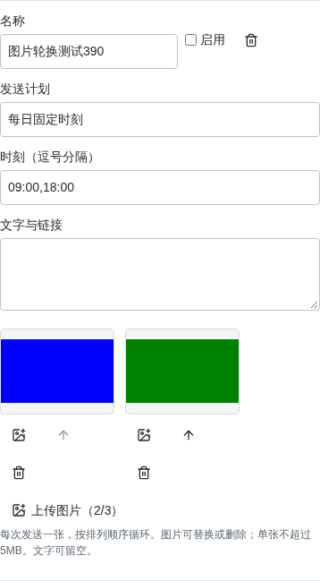
Updated October 24, 2026. This guide describes the integrated public mode using existing AstrBot accounts, not a separate public worker. Index · Command tree · AI reading and topic index · Architecture and permissions · Dated acceptance evidence.
Later on October 20, three connected accounts verified three isolated real warnings
in test group 1459282 across two fixtures of one and two, not full three-step escalation.
The real @大蛤, mention target and original recalls passed; independent peer
warning-recall notifications arrived 12.112/12.115/12.125 seconds after acceptance.
Rules, temporary native roles and windows were restored. This is not mute-escalation,
group-AI, complete-function or phone-rendering acceptance; see
scoped evidence.
Select an existing Wangshangliao bot under Bots, or create a new instance for a different account. Complete the official password/SMS verification flow, save changes and wait for Online. Authentication alone does not save the configuration or establish the message connection. An existing instance can only reauthenticate its original account.
For an existing integrated instance, Save login and connect updates connection information without resaving effective group permissions, rules or switches. Older pages may include read-only state or default group settings in the save request; refresh the updated page before completing one new login. A failed save after successful security verification does not mean the security code was incorrect.
Verified account names are display labels, not permission identifiers. Do not repeatedly retry a rejected login or infer a ban from a generic error. Never paste passwords, verification codes, cookies or tokens into chat or logs.
Account login stays under Bots. Rules, group control, activities, schedules, audit and reference tables are under Plugins → Wangshangliao Management. Occupied activation slots and operating groups are separate counts: paused or departed activated bindings can still occupy a slot.
| Previous location | Current location |
|---|---|
| Groups → Activation & Rules: activation, managers, admission upgrade | Groups → Activation |
| Groups → Activation & Rules: moderation, whitelist, keyword replies, scheduled ads | Groups → Rules |
| Activities: lottery | Activities & Finance → Player Lottery |
| Activities: invitation rewards | Activities & Finance → Invitation Rewards |
| Audit: historical counts and receipts | Runtime & Logs → Audit, plus current platform mutes |
Activation saves do not overwrite rules; Rules saves do not alter activation, pause state or managers. Keyword replies and scheduled ads still require preview/confirmation and never call AI. Invitation point rewards save independently of lottery settings and never reprice historical credits.
Player Lottery accepts a name, claim contact, total CNY amount and 1–100 participants.
Choose equal or lucky split. The verified-invitation threshold appears only when
Require verified invitations is checked; unchecked draws have no invite gate.
New WebUI drafts default to 参与抽奖. Existing default 参与玩家福利抽奖
rounds and their 参加抽奖 alias remain compatible.
The lottery form also supports an exact custom phrase of 1–32 characters. Existing commands,
numeric-only phrases and / or @ prefixes are rejected. With a custom phrase, the old
aliases only explain the current phrase and do not enroll. Each draw freezes its phrase.
Fixed tiers + random supports up to ten amount/count tiers. For example, CNY3,000 across 30 packets can reserve three packets of CNY288 and randomly split the remaining CNY2,136 into 27 packets. Additional tiers, such as CNY188 packets, are supported. Amounts and counts must fit the budget, and each remaining packet needs at least CNY0.01. The entire plan is generated and shuffled at opening, then randomly assigned to eligible entrants at the deadline. Each fixed tier can optionally reserve one or more of its packets for verified current group members. A member may be reserved only once, and reservations cannot exceed that tier's packet count. With no selections, allocation keeps the original fully random behavior. A reserved member must still be in the group with the same identity and must have entered the draw; otherwise the draw is blocked for administrator review instead of silently assigning that packet elsewhere. Reservations freeze with the round. Editing a tier amount updates its draft reservations; duplicate amounts must share one tier. Live member search and save verification each have a fifteen-second budget. Timeouts do not use old membership or save reservations. Changing groups, queries or resetting a draft invalidates late search results. Managed bot accounts cannot be reserved. Unknown opening or result receipts keep the settings frozen until the original publication is reviewed. Random amounts can exceed fixed tiers; tiers are not a guaranteed ranking. If participation is incomplete, fixed-tier packets may also remain unclaimed. Unclaimed amounts remain unspent, without redistribution or real refunds. Deadlines, immutable results, unknown-receipt protection and manual payout remain unchanged.
The private image store reuses identical scoped images. Selecting the same image twice within one rotation plan is rejected at upload without replacing the original image; different plans may still reference the same image.

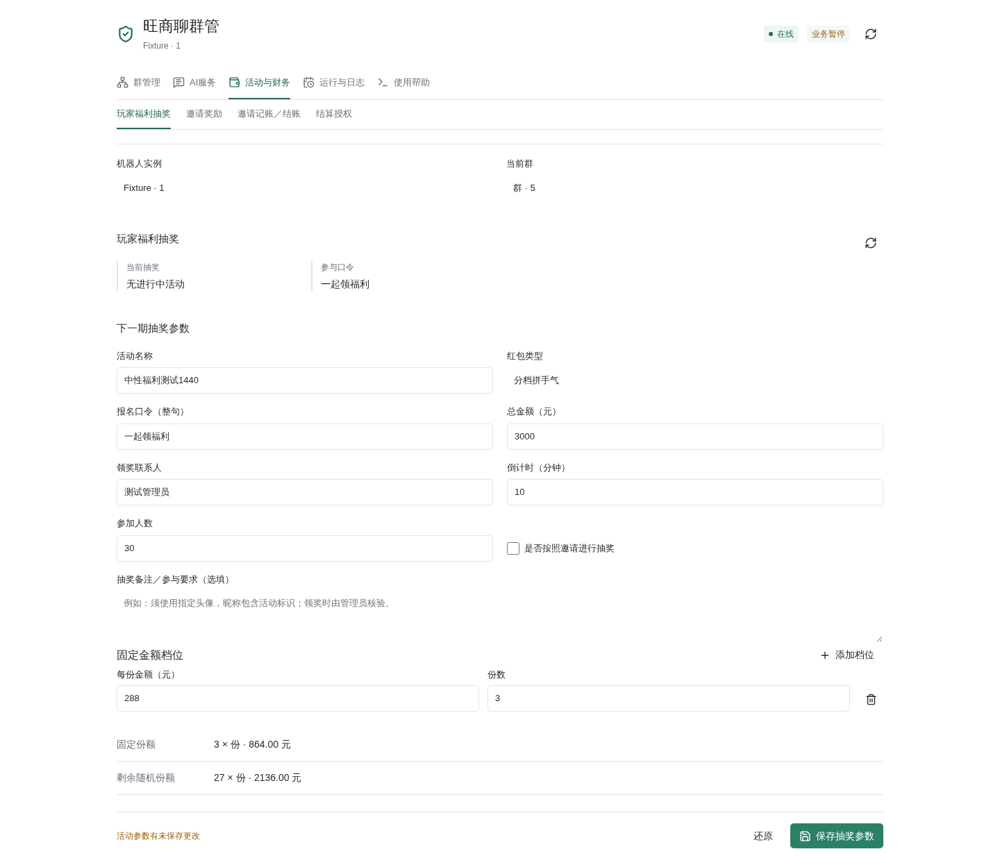
New activities freeze all packet shares at opening, using the configured participant count. Ordinary shares differ by at most one cent; lucky shares are randomly split in advance, each at least one cent. Whole-yuan mode instead uses a one-yuan minimum and one-yuan remainder increments. Ordinary result lists retain their random order; lucky result lists show amounts from largest to smallest without changing anybody's allocation. Draw announcements list the frozen activity name, type, entry phrase, Beijing start/draw times, prize tiers, participant count, win rate and winners. Full-capacity rounds show the required count instead of inventing a scheduled deadline. Fixed tiers appear in descending amount order with their counts; remaining random slots are separate. Winner rows contain a nickname and prize, keep native mentions, and never append internal UIDs or substitute one for a missing name. Whole amounts omit redundant decimal zeros; cent amounts remain exact. Bonus, unclaimed and pending-payout details remain. This presentation change neither redraws stored allocations nor republishes historical notices. By default results publish only after the countdown expires; filling every slot or an immediate-draw command cannot publish early. Explicitly choosing full-capacity mode instead publishes when the required valid entrants enroll, without a countdown. At expiry, eligible entrants receive only existing shares. Unclaimed shares are not redistributed. For 100 CNY in 10 ordinary packets, five entrants receive 10 CNY each and 50 CNY remains unclaimed; one entrant receives 10 CNY and 90 CNY remains unspent. No entrants or a cancellation leaves the entire pool unspent. Optional remarks accept up to 500 characters across multiple lines, such as avatar or nickname requirements. Opening notices, status and results show the frozen remarks. Administrators verify these conditions; there is no automated avatar or nickname assessment. Settings and shares freeze; results and unclaimed amounts persist before announcement, and unknown receipts never cause a redraw. Late delivery receipts cannot reopen or finish an activity already cancelled by robot-departure cleanup. These are pending payout and unspent records, not Alipay integration, real debits, payments, bank refunds or settlement ledger entries. Already-open activities and historical allocations are not recalculated, and legacy prize draws remain compatible.Current mutes come from the platform, not historical penalty timestamps. Unmute previews one member and rechecks identity, native privileges and action grants before submission. It neither clears history nor releases everyone. An unavailable directory is not an empty list; unknown receipts are not retried.

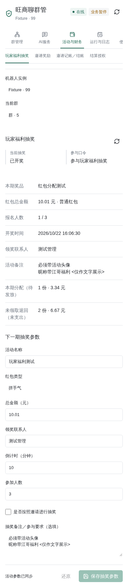
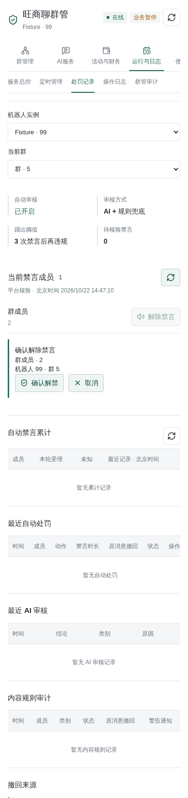
Ordinary-member invitations trigger controlled departure. Never substitute the owner, approver or notification sender for the real inviter. Unknown sources remain unopened and require operator investigation. Dashboard claim codes are single-use, digest-only and valid for ten minutes; they do not bypass invitation or inviter-role verification. Reinvitation cannot steal existing ownership.
Without native bot privileges, group features instruct the user to make the bot a group administrator first. Repeating commands does not grant that role.
Advertising and flood violations share three warning recalls per cycle, then 1/3/10-minute mutes. Once the final ten-minute mute expires, the next violation starts three new warnings. Each continuous flood burst is one violation, even when several messages are recalled.
Flood thresholds are five messages in three seconds, fifteen in ten seconds, or five identical texts in thirty seconds. Media count toward the rate thresholds.
New automatic exemptions require yesterday's Beijing top twenty and at least101 eligible texts, without backfilling rank21. Refresh/settling remain thirty seconds, with at most one count/member/thirty seconds and repeated text suppressed for five minutes. Existing eligibility survives midnight and renews for seven days with eligible text; seven inactive days expire it. Retained plus new members may exceed twenty. Manual grants remain; explicit removal blocks historical readdition until a later date qualifies anew. Blacklist wins, with no management grant or unmute.
Flood rules detect five texts/supported media messages from one member in three seconds, fifteen in ten seconds, or five repeated texts in thirty seconds. After warning grace, mute first, then recall the matching burst without waiting for AI. Accepted does not mean confirmed successful; uncertain operations must be reconciled, not blindly repeated.
Before three accepted advertising recalls, a failed or unknown recall earns no warning and causes no mute. After that grace, recalls and mutes are independent and authorization is checked again. An unknown mute freezes later automatic mutes, but does not itself disable separately authorized recalls. Manual recalls and mutes never increment automatic penalty counts.
Split-contact rules exclude already recalled evidence and evidence with an accepted, verified, unknown or sending recall receipt. This applies to solicitation text, broadcast cues, earlier numbers and the current number. Native notices must match this account, group, message, original client and native sender; a rejected receipt is not proof of recall. These evidence checks do not add abuse/image recognition, longer mutes, or automatic removal.
The exclusivity/removal fix loaded with the full restart at22:59:23 Beijing time, October23,2026 (PID4071721, NRestarts=0). All22 protected surfaces/config matched at22:59:51; Python1,794 passed/2 skipped, UI177 unit/9 browser passed. No real member changes or sanctions occurred;12 existing needs_review records remain without retry. No real full-chain load test occurred; see the maintenance record for limited performance measurements. Dist synchronization remains owner-controlled. New additions are exclusive by bot/group/UID: require removal from the other list first, never transfer/delete automatically. Keep historical overlaps with blacklist precedence; remove each separately. Blacklist removal neither unmutes nor deletes a whitelist entry. The loading and configuration evidence below predates this fix.
Code loaded after the full restart at 20:02:56 Beijing time, October 23, 2026 (PID3317496, NRestarts=0). At20:10:45, test-group online duration read/preview/ confirmation/readback passed from41,760 to60 and back to41,760 minutes; previews did not write and the default was restored. No new actual rejoin/mute acceptance was performed. Offline and configuration checks do not prove native sanctions. The 16:53:53 Beijing-time loading and subsequent three-kick test belong to the earlier policy only. The old “no immediate punishment” and “removal does not unmute” descriptions are not the current group contract. Current native group additions immediately mute; group removal removes and unmutes with separate receipts. Dashboard additions only record and Dashboard removals do not unmute. Use this page's opening section and current command tree. Complete dated evidence remains in maintenance history, not proof of this batch's deployment or live acceptance.
The server-only test_group_ai action connects the existing group_ai test
window to the real executor without enabling production AI or fabricating a
production payer's consent. It is fixed to receiver 43506527, sender 31846829
and group 1459282. A complete native roster must contain exactly the existing
three accounts, with the sender as owner and receiver as administrator. TestLab
may grant that role temporarily with preview/confirmation, then restore it.
Open a window with only group_ai, at most 300 seconds and 1–3 inbound messages.
The existing open-service endpoint accepts action: test_group_ai with
payload: {operation_id: WSL_TEST_WARM_<32 lowercase hex digits>, action: ...}.
Actions are open, status, send_1, send_2, send_3 and close. The sends
are fixed native mentions covering everyday conversation, previous-turn memory
and a read-only PC28 query; arbitrary text, groups and functions are rejected.
Repeated sends return the original receipt; uncertain receipts are never retried.
The normal 60-second group cooldown remains.
For a tool-only recheck, a fresh window may start with send_3; the earlier
questions then remain unavailable. Accounting persists across windows without
resetting used requests.
Only native inbox evidence admitted by the exact window can reach this test AI.
Command/keyword handling, cooldown, failure or revocation never falls back to
production AI. Current server-managed warm-group profile/persona bindings are
used, with conversation history isolated by run ID. Persistent test accounting is
under data/plugin_data/wangshangliao_open/group-ai-tests/: at most CNY 0.5 per
month, shared across windows, independently priced and settled per model request.
Actual supplier charges still apply. The shared two-request concurrency limit,
45-second turn deadline and at most two separately billed model calls per turn
remain. A test turn occupies both shared slots and is refused while any production
request is in flight, preventing the independent ledger from bypassing per-payer
in-flight limits. Unknown model/delivery outcomes block reopening pending manual review.
PC28 reads share the existing service's cache, per-IP request limiter and 429
backoff; this network-safety metadata is not a production user's bill.
Keep native input, receiver outbox receipt, sender's independent inbox witness, test charges and before/after production snapshots. Close the window and restore temporary native roles afterwards. No connector restart, production AI switch, production payer or financial-ledger mutation is part of this acceptance.
Losing the bot's native administrator role retains configuration/data while pausing group functionality. Restoring privileges does not replay old sanctions. Confirmed removal cancels tasks and confirmations and clears that bot/group's working data, not financial records, original ownership, minimal audit or uncertain receipts. Disconnects, API errors and temporary directory omissions never trigger deletion.
For save conflicts, refresh and review instead of resubmitting a stale preview.
Missing selectable groups require checking the receiving bot, verified caller
and explicit group grants, never nickname-based permission repair.
The October 20 post-load read-only check shows all four group-AI switches in
1516387's version5 configuration off, unchanged across loading. Business-group
operation and AI switches are distinct; earlier operating snapshots do not imply current AI enablement.
See dated evidence and outstanding gates
and maintenance.